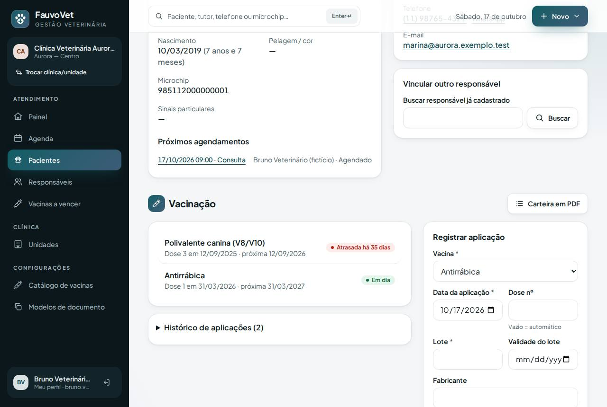
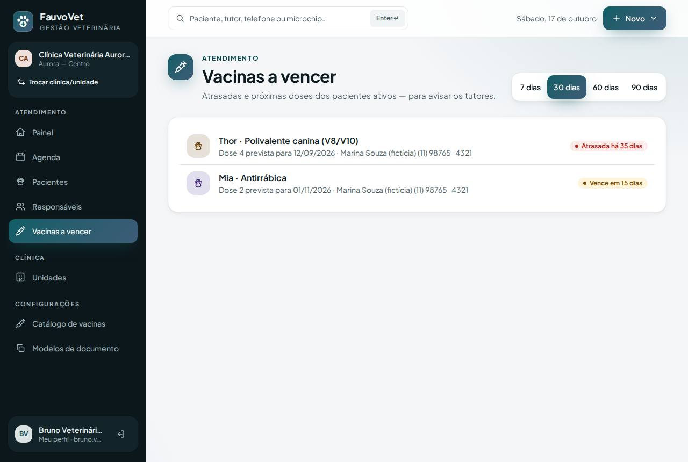

Vacinação: catálogo da clínica, carteira, próximas doses e vencimentos
ID: 2026-10-18-vacinacao · Data: 18/10/2026 · Versão: 0.9.0 · Módulo: E. Vacinação e medicina preventiva · Estado: implementado e testado localmente; publicação a cargo do proprietário (seção 7)
1. Objetivo
Registrar cada vacina aplicada com rastreabilidade (lote, fabricante, validade, local, profissional) e calcular a próxima dose pelo protocolo da clínica. A recepção também precisa ver quem está com vacina atrasada ou a vencer, para avisar os tutores.


2. O que mudou
- Configurações → Catálogo de vacinas (titular, gestão, veterinário):
- cada vacina tem espécies, número de doses da série, intervalo entre doses e intervalo de reforço;
- 7 modelos iniciais genéricos: polivalente canina e felina, antirrábica, tosse dos canis, giardíase, leishmaniose e FeLV. A tela pede para revisá-los com o protocolo da clínica e a bula.
- Ficha do paciente → Vacinação:
- situação de cada vacina: Em dia, Vence em N dias, Atrasada há N dias ou Sem próxima dose;
- histórico de aplicações;
- Registrar aplicação:
- vacina (só as indicadas para a espécie), data, dose (automática), lote, validade, fabricante e local de aplicação;
- próxima dose calculada automaticamente, ou informada;
- Carteira em PDF;
- Anular aplicação com motivo: a aplicação fica riscada no histórico e nunca é apagada.
- Menu → Vacinas a vencer: atrasadas e próximas dos pacientes ativos (7, 30, 60 ou 90 dias), com o telefone do responsável. O painel mostra as 5 primeiras.
- Regras:
- lote vencido na data da aplicação é recusado;
- vacina não indicada para a espécie é recusada;
- data da aplicação não pode ser futura;
- uma dose mais recente da mesma vacina tira o paciente da lista de vencimentos.
- Quem pode:
- recepção vê a carteira e os vencimentos, mas não registra;
- veterinário, assistente e titular registram e anulam;
- financeiro e estoque não acessam;
- registro, anulação e PDF da carteira ficam auditados.
- Arquivos:
- migração
2026_10_18_000002_create_vaccination_tables; app/Models/Vaccine.php,Vaccination.php(imutável),app/Services/VaccinationService.php;- controllers
VaccinationControllereVaccineController, viewsvaccinations/*(carteira PDF incluída); DocumentService::renderHtml; íconesyringe; permissõesvaccines:read,vaccines:writeevaccines:configure;- seed com vacinas fictícias (reforço do Thor atrasado);
- testes
VaccinationTest(8, sendo 2 de isolamento) e E2Evaccination.spec.ts.
- migração
Dependências novas: nenhuma.
3. Pré-requisitos
Os mesmos de antes. A carteira em PDF usa o dompdf já instalado.
Git Bash/macOS: NOT RUN.
4. Passo a passo (no seu computador)
cd ~/code/fauvovet→git pull --ff-only→pnpm db:start→pnpm db:migrate→pnpm db:seedpnpm dev→ entre comobruno.vet@aurora.exemplo.teste abra o Thor → Vacinação.
5. Como testar
pnpm verify --e2e
pnpm test:tenant-isolation- Como Bruno, no Thor:
- a "Polivalente canina" aparece Atrasada há 35 dias;
- registre a dose 4 com um lote fictício: o status passa a Em dia, com a próxima dose em 1 ano;
- tente um lote com validade de ontem: o registro é recusado;
- abra a Carteira em PDF.
- Na Kiwi (ave): as vacinas de cão e gato não aparecem na lista.
- Como Carla (recepção): ela vê a carteira e o menu Vacinas a vencer, mas não o formulário de registro.
- Como Diana (clínica B): a lista não mostra pacientes da clínica A.
6. Performance e usabilidade
- Vencimentos: uma consulta com índice por próxima dose e verificação de dose mais recente por paciente+vacina (índice por paciente+vacina+data).
- Carteira: 1 consulta.
- Registrar uma vacina leva 3 campos obrigatórios (vacina, data, lote); o resto é opcional ou automático.
- Acessibilidade: axe sem violações em Vacinas a vencer, catálogo e formulário de vacina, e o conteúdo cabe na tela do celular.
7. Implantação na Locaweb (1 migração)
- Terminal:
cd ~/code/fauvovet→git pull --ff-only→pnpm db:start→pnpm verify --e2e→pnpm deploy:package→pnpm deploy:copiar - Painel Locaweb: backup do banco.
- Terminal:
pnpm deploy:token. - FileZilla:
.envcomDEPLOY_TOOLS_ENABLED=true+ token novo → enviar → apagarbootstrap/cache/config.php(se existir). - FileZilla:
app-fauvovet(tudo excetostorage) epublic_html/fauvovet, com Sobrescrever. - Terminal:
diagnostico(pending_migrations: 1) →migrar→otimizar. - FileZilla:
DEPLOY_TOOLS_ENABLED=false→ enviar → apagarbootstrap/cache/config.php. - Terminal:
SMOKE_URL=https://dradeboragaldino.com.br/fauvovet pnpm smoke(5 PASS). - Navegador: abra Configurações → Catálogo de vacinas (é nesse momento que os modelos são criados) e revise os protocolos com a sua prática.
Sem HTTPS válido, só dados fictícios.
8. Rollback
- Código: reenvie
.deploy/fauvovet-62debc1e rode o otimizar. As tabelas novas ficam sem uso. - Banco: restaure o backup do passo 2 (as aplicações registradas depois somem).
- Local:
git revertemigrate:rollback --step=1(só desenvolvimento).
9. Troubleshooting
| Sintoma | Causa e solução |
|---|---|
| "Esta vacina não está indicada para a espécie…" | Ajuste as espécies da vacina no catálogo, ou deixe nenhuma marcada (= todas). |
| "O lote já estava vencido na data da aplicação" | Confira a validade digitada; um lote vencido não deve ser aplicado. |
| Próxima dose errada | Revise doses, intervalo e reforço da vacina no catálogo, ou informe a data manualmente ao registrar. |
| Paciente não sai da lista "a vencer" | A dose nova precisa ser da mesma vacina do catálogo, com data posterior. |
| Recepção não consegue registrar | Comportamento esperado: só a equipe clínica registra. |
10. Evidências e status
| Verificação | Status | Detalhe |
|---|---|---|
pnpm verify --e2e | PASS | 9/9 etapas |
| PHPUnit | PASS | 151 testes (8 novos de vacinação) |
| Isolamento | PASS | 37 testes (2 novos) |
| E2E + axe + borda no celular | PASS | vacinação desktop/celular |
| Lembrete automático ao tutor (WhatsApp/e-mail) | NOT RUN | Depende de provedor (Fase 5); hoje a recepção usa a lista |
Commit: registrado no docs/PROGRESS.md após a sincronização.
Próximo passo: busca avançada de pacientes e casos científicos, nesta mesma sessão.